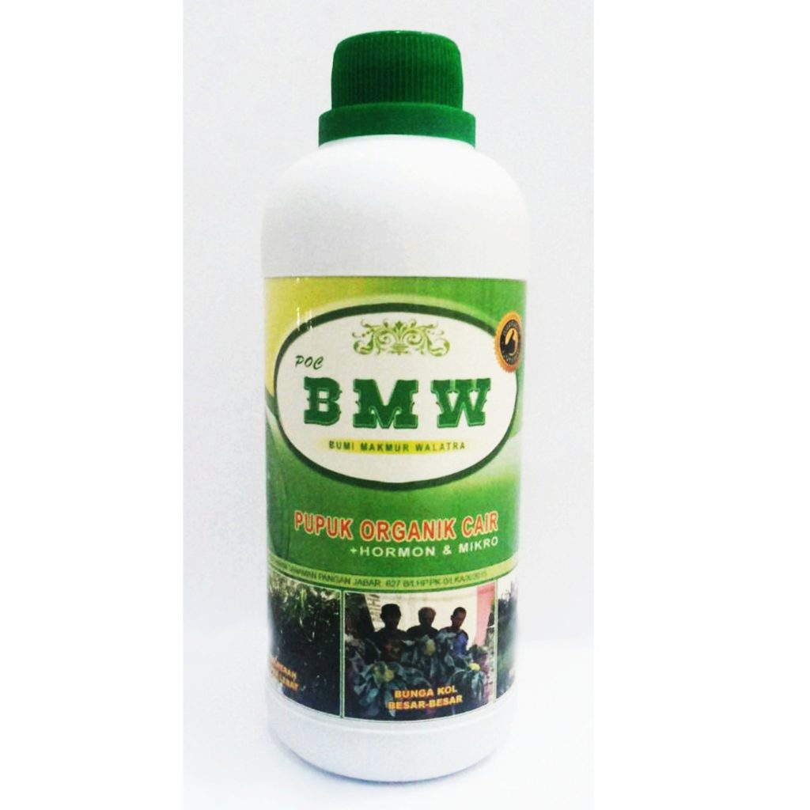

Pupuk Cair EM4 Pertanian – Efektif Mikro Organisme 1ltr
Description :

Bahan Aktif :
Pupuk Bio Organik Cair Biofarm plus Booster ialah pupuk
organik cair yg berasal dari bahan organik yg diproses melalui
Biological Complex Process (BCP), diperkaya dgn Bioprotectant,
hormon pertumbuhan, ZPT, unsur hara makro & mikro, dgn teknologi
mikrobia lengkap (mengandung lebih dari 1 juta mikrobia bermanfaat
bagi tanah & tanaman), mengurangi penggunaan kimia sampai dgn 100%,
meningkatkan hasil, & meningkatkan sistem imun tanaman terhadap
penyakit. Plus Booster Pertumbuhan 10 Sachets.

Kegunaan :
Memperbaiki sifat fisik, kimia, & biologi
tanah. Meningkatkan aktivitas mikrobiologi tanah sehingga
proses penyerapan hara menjadi lebih efisien. Efisiensi p
emupukan. Efektivitas bahan organik sbg pupuk. Merangsan
g pertumbuhan akar, batang, daun, & buah. Meningkatkan k
apasitas fotosintesis & pertumbuhan vegetatif. Mempercepa
t pertumbuhan mikroorganisme alami tanah (meningkatkan populasi mikroba tanah).
Perendaman Benih : Campurkan 5 ml Biofarm ke dalam 1 Liter air. Rendam benih
+/- 2 – 3 jam / sesuai anjuran pemakaian produk. Benih siap utk ditanam.
Ketentuan
Hubungi Kami
Kebijakan Privasi